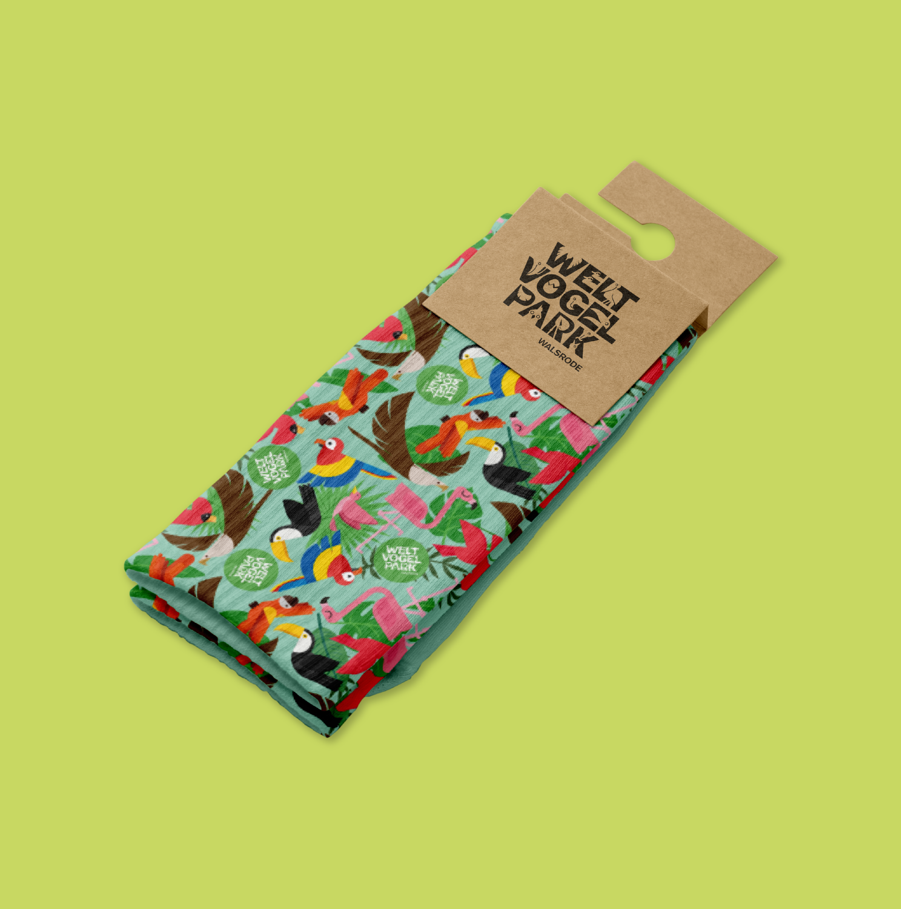
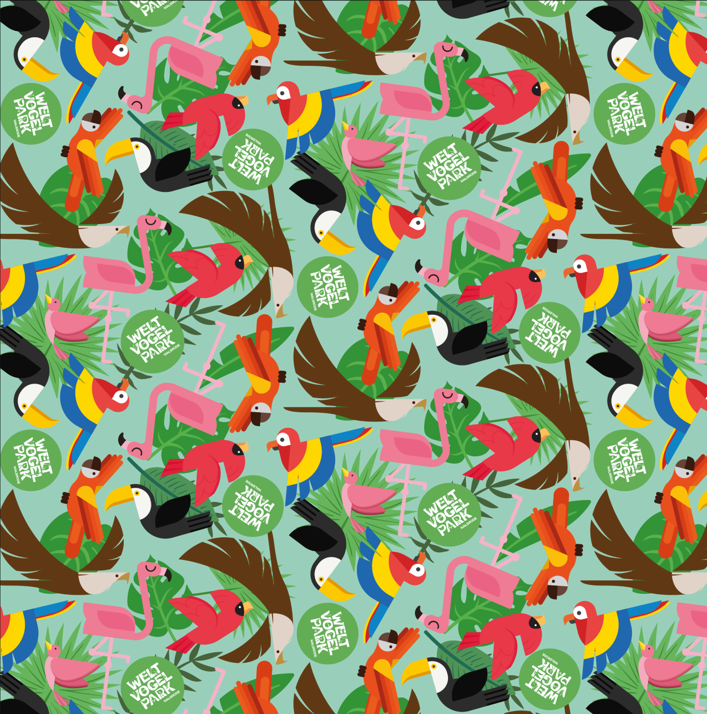
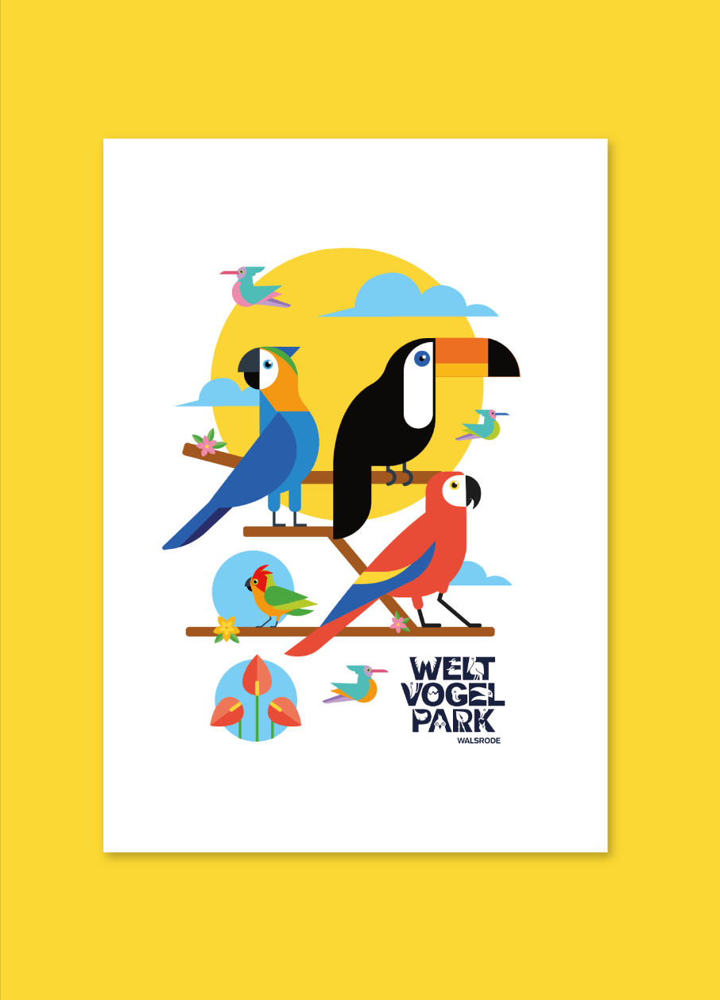
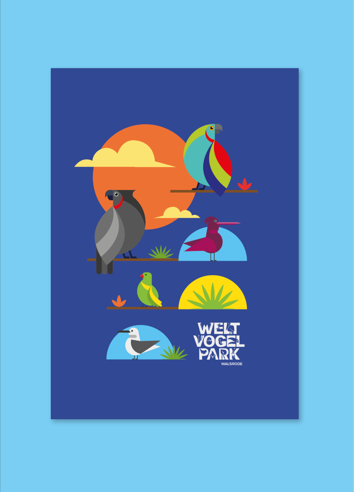
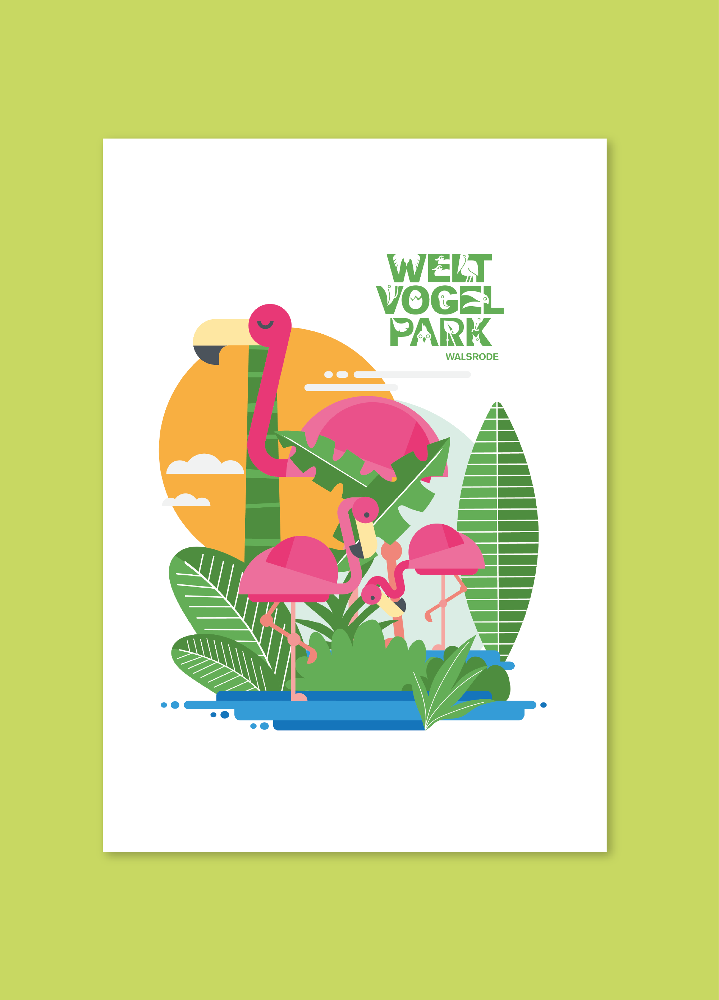
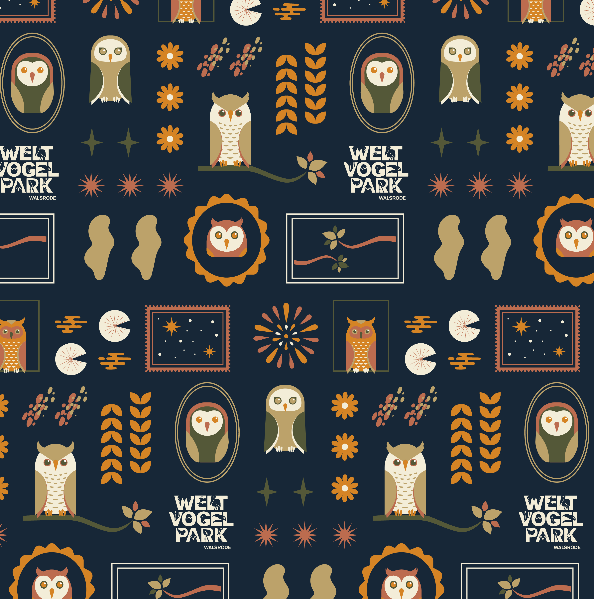
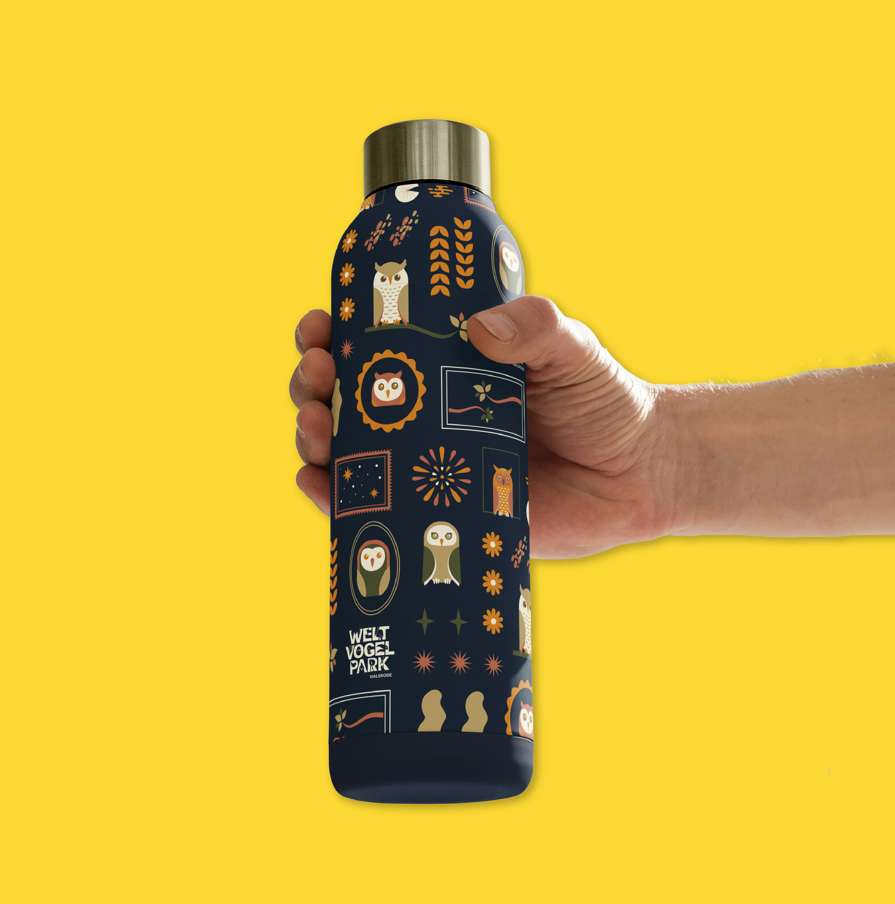
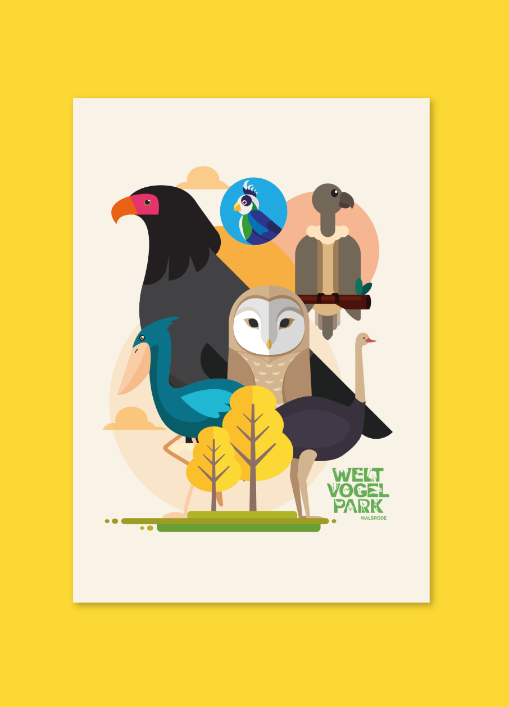
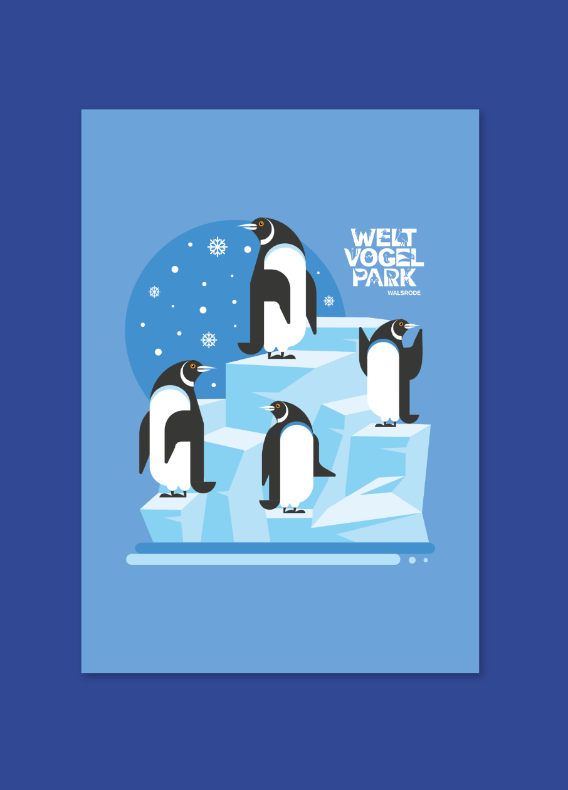
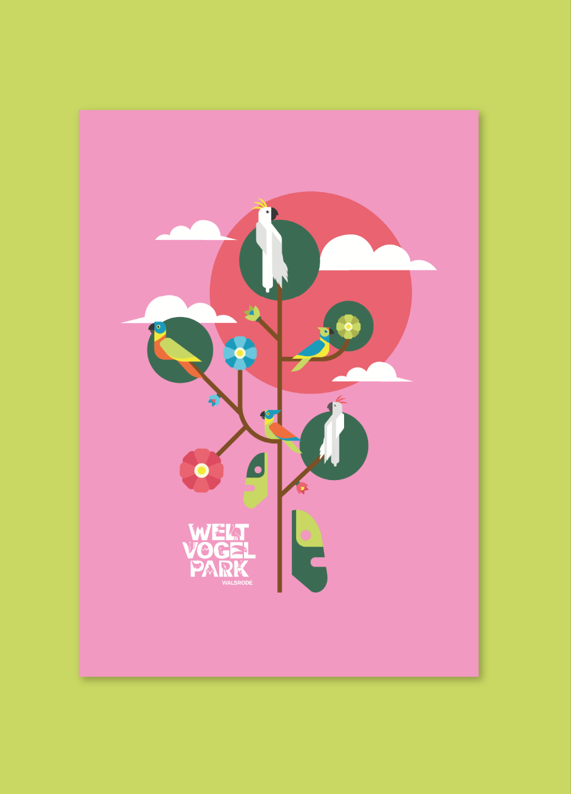

Welt Vogel Park
Germany
Visual Identity
Visual identity for Weltvogelpark Walsrode's merchandising stores, Germany.
A comprehensive proposal including posters, tags, packaging, and every element needed for the store to reflect the richness and diversity of the world's largest bird park. Each design highlights its commitment to bird conservation and turns the visitor experience into an extension of the park.









